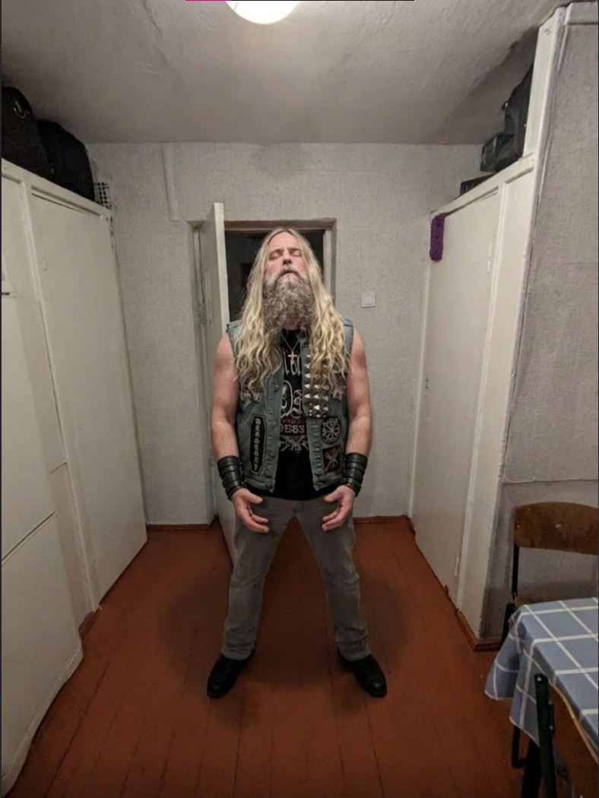

На звук гітари невдовзі прийшов Slash, який, побачивши Zakk Wylde за грою, також захотів випробувати інструмент. Однак Зак відмовився передавати гітару колезі, що призвело до суперечки між двома музикантами. Slash спробував забрати інструмент силою, тоді як Wylde продовжував тримати його. Ситуація поступово перетворилася на справжнє перетягування гітари, а присутні спостерігали за подіями, не очікуючи такого завершення звичайного музичного імпровізаційного виступу.


У ході сутички саморобна гітара не витримала навантаження: корпус тріснув, а конструкція остаточно розламалася в руках музикантів. Для студента, який витратив чимало часу на створення інструмента й не мав коштів на придбання нового, цей випадок став справжнім ударом. Історія про зламану гітару швидко перетворилася на приклад того, як навіть зустріч із легендами рок-музики може завершитися зовсім не так, як очікувалося. Ця історія є вигаданою та створена для творчого завдання.